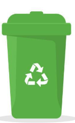
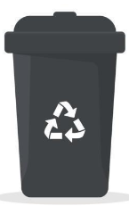

Lo primero que tenés que hacer para reutilizar o reciclar es SEPARAR LOS RESIDUOS.
La forma más práctica es dividir la basura en 2 equipos, el de “Los Reciclables” y el de los “No
Reciclables“.

Reciclable

No Reciclable
Los Reciclables deben estar limpios y secos; de lo contrario, pueden contaminarse o ensuciarse entre
si,
imposibilitando el posterior reciclado.
Ejemplo: el papel mojado no puede introducirse en el cesto de “Reciclables”.
Además del Cartón, Papel, Plástico, Metal y Vidrio, también podes separar la Ropa, la Tela, los
envases
de
Tetabrick, el Telgopor, entre otros.
El límite entre lo que “es” y “no es” reciclable lo ponés VOS. Si algún objeto o material no puede
ser
reciclado, es muy probable que pueda ser reutilizado.
Por lo tanto, antes de tirar algo, averiguá a quién le puede servir.